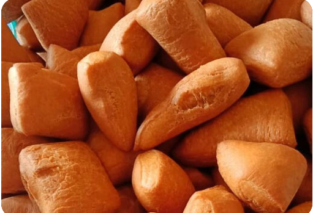

Mandazi Recipe

Description
Whether it's to snack on or an accompaniment for breakfast mandazis are the go for choice.
Cooked to be so tender and sweet that will always giving you craving for more after just
a single bite.
Ingredients
- 3 cups all-purpose flour
- 1/2 cup sugar
- 1 1/2 teaspoons baking powder
- 2 teaspoons ground cardamom
- 1/2 teaspoon kosher salt
- 1 egg, beaten
- 400ml coconut milk
- oil, for frying
Steps
- In a large bowl, whisk together the flour,
sugar, baking powder, cardamom, and salt. Make a well in the center,
then use a rubber spatula to mix in the egg and coconut milk until the dough comes together.
- Turn the dough out onto a floured surface and knead until smooth. Dive the dough into 4 portions.
Roll out 1 portion of dough into a circle about 1/4-inch (6 ml) thick. Cut into 8 triangles.
Repeat with the remaining dough portions.
- Heat the oil in a large pot until it reaches 350˚F (180˚C).
- Working in batches, fry the mandazi for 2-3 minutes per side, until golden brown. Drain on paper towels.